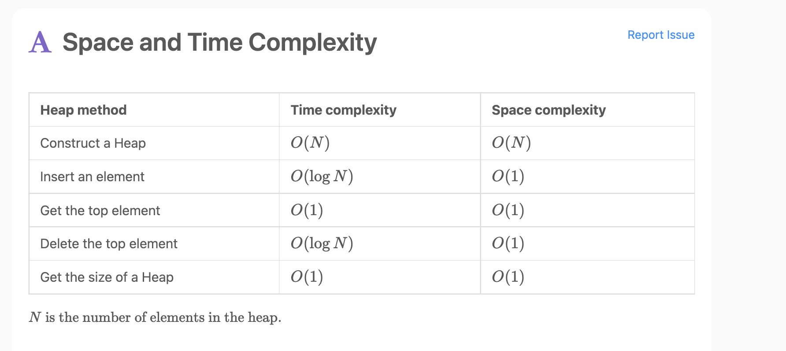
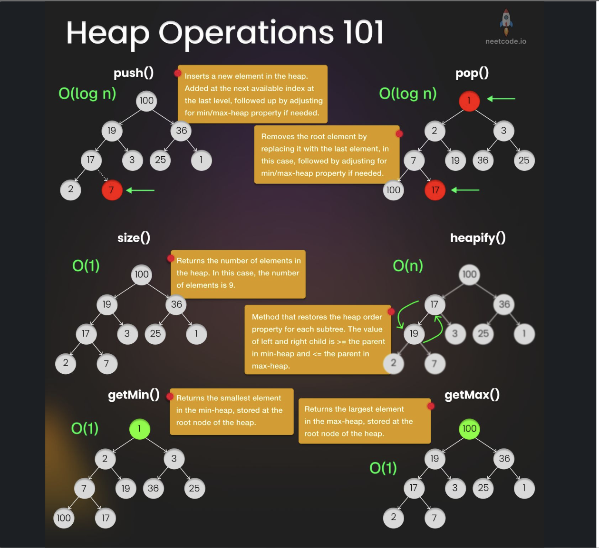
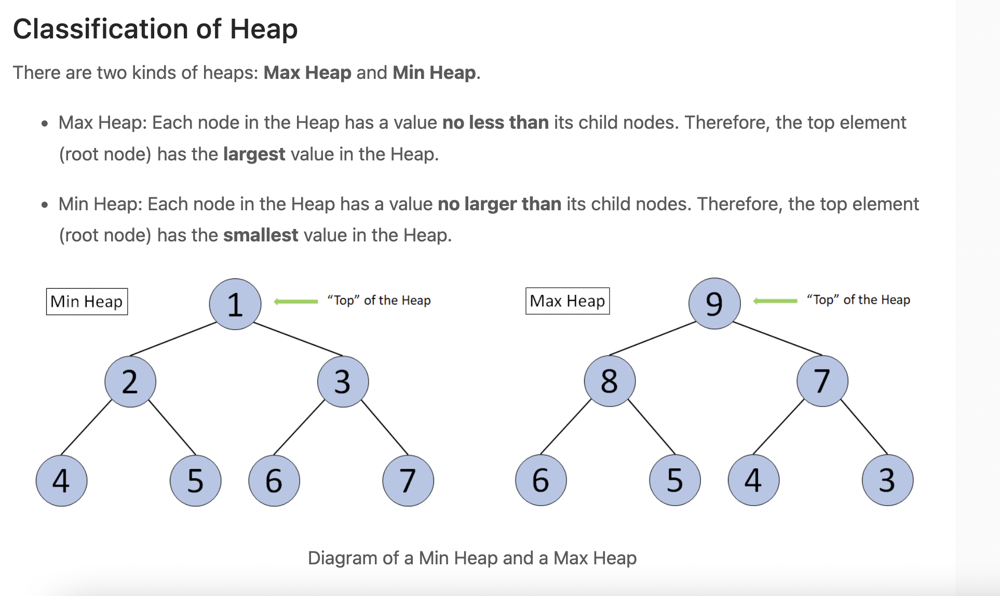

Heap
Last updated: Mar 19, 2026Table of Contents
- Overview
- Key Properties
- Heap Types
- Priority Queue Relationship
- Problem Categories
- References
- Templates & Algorithms
- Template Comparison Table
- Universal Heap Template
- Specific Pattern Templates
- Python heapq API Reference
- 1-2) Heap VS Stack VS Queue
- 1-3) Heap sort
- 1-4) Priority Queue
- 2) LC Example
- 2-0) Top K Frequent Elements
- 2-1) Kth Largest Element in a Stream
- 2-2) Ugly Number II
- 2-3) Find Median from Data Stream
- 2-4) Minimum Cost to Connect Sticks
- 2-5) The kth Factor of n
- 2-6) Least Number of Unique Integers after K Removals
- 2-7) Maximum Number of Events That Can Be Attended
- 2-8) Maximum Frequency Stack
- 2-9) Ugly Number II
- 2-10) Find K Pairs with Smallest Sums
- 2-11) Kth Smallest Element in a Sorted Matrix
- 2-12) Minimum Deletions to Make Character Frequencies Unique
- 2-13) Maximum Performance of a Team
- 2-14) Minimum Number of Refueling Stops
- 2-15) Minimum Number of Visited Cells in a Grid
- Problems by Pattern
- Pattern-Based Problem Classification
- Advanced Heap Problems
- Heap + Other Data Structure Combos
- Pattern Selection Strategy
- Decision Framework Flowchart
- Template Selection Guide
- Common Decision Points
- Summary & Quick Reference
- Complexity Quick Reference
- Template Quick Reference
- Common Patterns & Tricks
- Problem-Solving Steps
- Common Mistakes & Tips
- Interview Tips
- Related Topics
- Language-Specific Notes
Heap Data Structure
Overview
Heap is a complete binary tree that satisfies the heap property, making it ideal for efficient access to the largest or smallest element in a dataset. It’s the foundation for priority queues and heap sort algorithms.


Key Properties
- Time Complexity:
- Insert:
O(log N) - Delete:
O(log N) - Access Min/Max:
O(1) - Build Heap:
O(N)
- Insert:
- Space Complexity:
O(N) - Core Idea: Complete binary tree where parent-child relationship follows heap property
- When to Use: Need frequent access to min/max element, priority scheduling, sorting
Heap Types
- Min Heap: Parent ≤ Children (root contains minimum)
- Max Heap: Parent ≥ Children (root contains maximum)

Priority Queue Relationship
- Priority Queue: Abstract data type with priority-based access
- Heap: Common implementation of priority queue
- Key Difference: Priority Queue is concept, Heap is implementation
Problem Categories
Pattern 1: Kth Element Problems
- Description: Find the kth largest/smallest element in a dataset
- Examples: LC 215, 703, 1492 - Kth Largest Element, Kth Largest in Stream, Kth Factor
- Pattern: Use min/max heap of size k, maintain heap property
Pattern 2: Top K Problems
- Description: Find top k elements with highest/lowest frequency or value, or make frequencies unique
- Examples:
- Top K: LC 347, 692, 973 - Top K Frequent Elements, Top K Words, K Closest Points
- Frequency Uniqueness: LC 1647, 1481 - Make Frequencies Unique, Least Unique After K Removals
- Pattern: Count frequency, use heap to maintain top k results or ensure unique frequencies
Pattern 3: Merge Problems
- Description: Merge multiple sorted arrays/lists efficiently
- Examples: LC 23, 373, 378 - Merge k Lists, K Smallest Pairs, Kth Smallest in Matrix
- Pattern: Use min heap to track current minimum from each source
Pattern 4: Sliding Window Extrema
- Description: Find min/max in sliding windows efficiently
- Examples: LC 239, 480, 1438 - Sliding Window Maximum, Sliding Median, Longest Subarray
- Pattern: Use heap with lazy deletion or deque for extrema tracking
Pattern 5: Scheduling Problems
- Description: Schedule tasks or events based on priority/timing
- Examples: LC 1353, 502, 630 - Max Events, IPO, Course Schedule III
- Pattern: Use heap to maintain events by start/end time or priority
Pattern 6: Data Stream Problems
- Description: Handle continuous data stream with min/max queries
- Examples: LC 295, 480, 1825 - Find Median, Sliding Median, Finding MK Average
- Pattern: Use two heaps (min + max) to maintain balanced structure
Pattern 7: Grid Shortest Path with Range Jumps
- Description: Find shortest path in grid where each cell can jump to a range of cells
- Examples: LC 2617 - Minimum Number of Visited Cells in a Grid
- Pattern: DP + Per-row/column PQs with lazy deletion
- Key Insight: Standard BFS is O(N²) per cell; PQ reduces to O(log N) per cell
- Similar: LC 778 (Swim in Rising Water), LC 1631 (Path With Minimum Effort)
References
Templates & Algorithms
Template Comparison Table
| Template Type | Use Case | Time Complexity | When to Use |
|---|---|---|---|
| Universal Heap | General min/max operations | O(log N) insert/delete | Any heap-based problem |
| Kth Element | Find kth largest/smallest | O(N log k) | Fixed size heap needed |
| Top K Frequency | Find most/least frequent | O(N log k) | Frequency-based selection |
| Merge K Sources | Merge sorted arrays/lists | O(N log k) | Multiple sorted inputs |
| Two Heap System | Maintain median/balance | O(log N) | Data stream with median |
| Heap + HashSet | Duplicate handling | O(log N) | Need uniqueness constraint |
| Frequency Uniqueness | Make frequencies unique | O(N + K log K) | Ensure all frequencies distinct |
| Grid Range Jumps | Grid shortest path with variable jumps | O(MNlog(M+N)) | DP + per-row/col PQ + lazy deletion |
Universal Heap Template
def solve_with_heap(nums, k=None):
import heapq
# Create heap (min heap by default in Python)
heap = []
# Build heap approach 1: Insert elements one by one
for num in nums:
heapq.heappush(heap, num)
# Build heap approach 2: Heapify existing array
# heapq.heapify(nums) # O(N) time
# Access min element (don't remove): heap[0]
# Remove min element: heapq.heappop(heap)
# Insert element: heapq.heappush(heap, value)
# For max heap, use negative values
# max_heap = [-x for x in nums]
# heapq.heapify(max_heap)
# max_val = -max_heap[0] # Get max without removing
# max_val = -heapq.heappop(max_heap) # Remove and get max
return heap
// Java Universal Template
public class HeapSolution {
public void solveWithHeap(int[] nums, int k) {
// Min Heap
PriorityQueue<Integer> minHeap = new PriorityQueue<>();
// Max Heap
PriorityQueue<Integer> maxHeap = new PriorityQueue<>((a, b) -> b - a);
// Add elements
for (int num : nums) {
minHeap.offer(num);
}
// Access min: minHeap.peek()
// Remove min: minHeap.poll()
// Add element: minHeap.offer(value)
}
}
Specific Pattern Templates
1. Kth Element Template
💡 Key Insight:
-
kth smallest element= biggest element from a Max PQ of size k- Use max heap of size k to find kth smallest
- The root (peek) of the max heap is the kth smallest element
- Why? Keep only the k smallest elements; the largest among them is the kth smallest overall
-
kth largest element= smallest element from a Min PQ of size k- Use min heap of size k to find kth largest
- The root (peek) of the min heap is the kth largest element
- Why? Keep only the k largest elements; the smallest among them is the kth largest overall
def find_kth_largest(nums, k):
import heapq
# Method 1: Min heap of size k
heap = []
for num in nums:
if len(heap) < k:
heapq.heappush(heap, num)
elif num > heap[0]:
heapq.heapreplace(heap, num)
return heap[0] # kth largest
def find_kth_smallest(nums, k):
import heapq
# Method 1: Max heap of size k (use negative values)
heap = []
for num in nums:
if len(heap) < k:
heapq.heappush(heap, -num)
elif num < -heap[0]:
heapq.heapreplace(heap, -num)
return -heap[0] # kth smallest
2. Top K Frequency Template
def top_k_frequent(nums, k):
from collections import Counter
import heapq
# Count frequencies
count = Counter(nums)
# Method 1: Min heap approach
heap = []
for num, freq in count.items():
heapq.heappush(heap, (freq, num))
if len(heap) > k:
heapq.heappop(heap)
return [item[1] for item in heap]
# Method 2: Max heap approach
# heap = [(-freq, num) for num, freq in count.items()]
# heapq.heapify(heap)
# return [heapq.heappop(heap)[1] for _ in range(k)]
3. Merge K Sources Template
def merge_k_sorted_arrays(arrays):
import heapq
heap = []
result = []
# Initialize heap with first element from each array
for i, arr in enumerate(arrays):
if arr: # Check if array is not empty
heapq.heappush(heap, (arr[0], i, 0))
while heap:
val, array_idx, element_idx = heapq.heappop(heap)
result.append(val)
# Add next element from same array
if element_idx + 1 < len(arrays[array_idx]):
next_val = arrays[array_idx][element_idx + 1]
heapq.heappush(heap, (next_val, array_idx, element_idx + 1))
return result
4. Two Heap System Template (Median)
class MedianFinder:
def __init__(self):
import heapq
self.small = [] # max heap (use negative values)
self.large = [] # min heap
def addNum(self, num):
import heapq
# Add to appropriate heap
if len(self.small) == len(self.large):
heapq.heappush(self.large, -heapq.heappushpop(self.small, -num))
else:
heapq.heappush(self.small, -heapq.heappushpop(self.large, num))
def findMedian(self):
if len(self.small) == len(self.large):
return (self.large[0] - self.small[0]) / 2.0
else:
return float(self.large[0])
5. Heap with Deduplication Template
def solve_with_unique_heap(nums):
import heapq
heap = []
seen = set()
for num in nums:
if num not in seen:
heapq.heappush(heap, num)
seen.add(num)
return heap
6. Grid Shortest Path with Range Jumps Template
/**
* Template for Grid Shortest Path with Variable Jump Ranges
*
* Pattern: DP + Per-row/column Priority Queues with Lazy Deletion
*
* Problem Type: From (0,0), each cell (i,j) can jump to:
* - Right: (i, k) where j < k <= j + grid[i][j]
* - Down: (k, j) where i < k <= i + grid[i][j]
* Find minimum cells to reach (m-1, n-1)
*
* Key Insight: Standard BFS would be O(N²) per cell; PQ reduces to O(log N)
*
* Time: O(M*N*log(M+N))
* Space: O(M*N)
*/
public int gridShortestPathTemplate(int[][] grid) {
int m = grid.length, n = grid[0].length;
int[][] dist = new int[m][n];
for (int[] row : dist) Arrays.fill(row, -1);
// Create one PQ per row and one PQ per column
// Each PQ stores {distance, index} sorted by distance
PriorityQueue<int[]>[] rowPQs = new PriorityQueue[m];
PriorityQueue<int[]>[] colPQs = new PriorityQueue[n];
for (int i = 0; i < m; i++)
rowPQs[i] = new PriorityQueue<>((a, b) -> a[0] - b[0]);
for (int j = 0; j < n; j++)
colPQs[j] = new PriorityQueue<>((a, b) -> a[0] - b[0]);
dist[0][0] = 1; // Starting cell counts as 1
for (int i = 0; i < m; i++) {
for (int j = 0; j < n; j++) {
// 1. Check cells from same row that can reach (i,j)
while (!rowPQs[i].isEmpty()) {
int[] top = rowPQs[i].peek();
int prevCol = top[1];
// Can previous cell jump far enough to reach column j?
if (prevCol + grid[i][prevCol] >= j) {
int d = top[0] + 1;
if (dist[i][j] == -1 || d < dist[i][j])
dist[i][j] = d;
break; // First valid = best (PQ sorted by distance)
}
// Lazy deletion: cell can never reach future columns
rowPQs[i].poll();
}
// 2. Check cells from same column that can reach (i,j)
while (!colPQs[j].isEmpty()) {
int[] top = colPQs[j].peek();
int prevRow = top[1];
if (prevRow + grid[prevRow][j] >= i) {
int d = top[0] + 1;
if (dist[i][j] == -1 || d < dist[i][j])
dist[i][j] = d;
break;
}
colPQs[j].poll();
}
// 3. Add current cell to PQs for future cells
if (dist[i][j] != -1 && grid[i][j] > 0) {
rowPQs[i].offer(new int[]{dist[i][j], j});
colPQs[j].offer(new int[]{dist[i][j], i});
}
}
}
return dist[m - 1][n - 1];
}
# Python Template: Grid Shortest Path with Range Jumps
import heapq
def grid_shortest_path(grid):
"""
Pattern: DP + Per-row/column heaps with lazy deletion
Key insight: Each cell can be processed once per row/column heap,
and expired cells are removed lazily when encountered.
"""
m, n = len(grid), len(grid[0])
dist = [[-1] * n for _ in range(m)]
# One min-heap per row and per column
# Each heap stores (distance, index)
row_pqs = [[] for _ in range(m)]
col_pqs = [[] for _ in range(n)]
dist[0][0] = 1
for i in range(m):
for j in range(n):
# Check row heap for cells that can reach (i, j)
while row_pqs[i]:
d, prev_col = row_pqs[i][0]
if prev_col + grid[i][prev_col] >= j:
if dist[i][j] == -1 or d + 1 < dist[i][j]:
dist[i][j] = d + 1
break
heapq.heappop(row_pqs[i]) # Lazy deletion
# Check column heap for cells that can reach (i, j)
while col_pqs[j]:
d, prev_row = col_pqs[j][0]
if prev_row + grid[prev_row][j] >= i:
if dist[i][j] == -1 or d + 1 < dist[i][j]:
dist[i][j] = d + 1
break
heapq.heappop(col_pqs[j])
# Add current cell to heaps if reachable and can jump
if dist[i][j] != -1 and grid[i][j] > 0:
heapq.heappush(row_pqs[i], (dist[i][j], j))
heapq.heappush(col_pqs[j], (dist[i][j], i))
return dist[m - 1][n - 1]
7. Frequency Uniqueness Template (Greedy + Heap/HashSet)
def make_frequencies_unique(s):
"""
Pattern: Make all character frequencies unique with minimum deletions
Used in: LC 1647, LC 1481
"""
from collections import Counter
import heapq
# Approach 1: Max Heap (process high to low)
def heap_approach():
freq_count = Counter(s)
max_heap = [-f for f in freq_count.values()]
heapq.heapify(max_heap)
deletions = 0
while len(max_heap) > 1:
top = -heapq.heappop(max_heap)
next_val = -max_heap[0]
if top == next_val:
top -= 1
deletions += 1
if top > 0:
heapq.heappush(max_heap, -top)
return deletions
# Approach 2: HashSet (track used frequencies)
def hashset_approach():
freq_count = Counter(s)
used_freq = set()
deletions = 0
for freq in freq_count.values():
# Decrement until finding unused frequency
while freq > 0 and freq in used_freq:
freq -= 1
deletions += 1
used_freq.add(freq)
return deletions
# Approach 3: Sorting (ensure strictly decreasing)
def sort_approach():
freq = [0] * 26
for c in s:
freq[ord(c) - ord('a')] += 1
freq.sort(reverse=True)
deletions = 0
for i in range(len(freq) - 1):
if freq[i] == 0:
break
if freq[i] <= freq[i + 1]:
prev = freq[i + 1]
freq[i + 1] = max(0, freq[i] - 1)
deletions += prev - freq[i + 1]
return deletions
# Best approach depends on constraints
return hashset_approach() # Generally most intuitive
// Java Version - Frequency Uniqueness
public int makeFrequenciesUnique(String s) {
// Count frequencies
int[] freq = new int[26];
for (char c : s.toCharArray()) {
freq[c - 'a']++;
}
// Max heap approach
PriorityQueue<Integer> pq = new PriorityQueue<>(Collections.reverseOrder());
for (int f : freq) {
if (f > 0) pq.add(f);
}
int deletions = 0;
while (pq.size() > 1) {
int top = pq.poll();
if (top == pq.peek()) {
top--;
deletions++;
if (top > 0) pq.add(top);
}
}
return deletions;
}
Python heapq API Reference
- Note :
- in Py, heapq is
MIN heap- if we need max heap, can use
-1 * val- LC 1492
- if we need max heap, can use
- in Py implementation,
index start from 0 pop()will returnminelement (instead of max element)- 2 ways build heap (in py)
- heappush(heap, num)
- heapify(array)
- complexity
- push/pop (each)
- time : O(log(N))
- space : O(N)
- ref : SF - whats-the-time-complexity-of-functions-in-heapq-library
- so, if implement push/pop on all elements, will cost
- time : O(N log(N))
- space : O(N)
- push/pop (each)
- in Py, heapq is
- Basic API
- heapify : transform list to heap
- heappush : put element into heap
- heappop : get (remove) top element from heap
- Min heap : delete top element from the Min Heap
- Max heap : delete top element from the Max Heap
- heappushpop : heappush then heappop (put first, then pop)
- heapreplace : heappop then heappush (pop first, then put)
- nlargest : return top N large elements
- nsmallest : return top N least elements
- Ref
- https://docs.python.org/zh-tw/3/library/heapq.html
- https://ithelp.ithome.com.tw/articles/10247299
- https://cloud.tencent.com/developer/article/1794191#:~:text=heapq 库是Python标准,等于)%E5%AE%83%E7%9A%84%E5%AD%90%E8%8A%82%E7%82%B9%E3%80%82
- https://python.plainenglish.io/python-for-interviewing-an-overview-of-the-core-data-structures-666abdf8b698
#------------------------
# PY API examples
#------------------------
#----------------------
# 1) build heapq
#----------------------
In [43]: import heapq
...:
...:
...: array = [10, 17, 50, 7, 30, 24, 27, 45, 15, 5, 36, 21]
...: heap = []
...: for num in array:
...: heapq.heappush(heap, num)
...: print("array:", array)
...: print("heap: ", heap)
...:
...: heapq.heapify(array)
...: print("array:", array)
array: [10, 17, 50, 7, 30, 24, 27, 45, 15, 5, 36, 21]
heap: [5, 7, 21, 15, 10, 24, 27, 45, 17, 30, 36, 50]
array: [5, 7, 21, 10, 17, 24, 27, 45, 15, 30, 36, 50]
# NOTE : there are 2 ways create heap (in py)
# 1) heappush(heap, num)
# 2) heapify(array)
#
# -> we can see above results are a bit different. However this not affect the "min heap" property in py. We can still get min element, and heap will get updated accordingly.
#----------------------
# 1') build heapq V2
#----------------------
# https://leetcode.com/explore/learn/card/heap/644/common-applications-of-heap/4022/
import heapq
# Construct an empty Min Heap
minHeap = []
heapq.heapify(minHeap)
# Construct an empty Max Heap
# As there are no internal functions to construct a Max Heap in Python,
# So, we will not construct a Max Heap.
# Construct a Heap with Initial values
# this process is called "Heapify"
# The Heap is a Min Heap
heapWithValues = [3,1,2]
heapq.heapify(heapWithValues)
# Trick in constructing a Max Heap
# As there are no internal functions to construct a Max Heap
# We can multiply each element by -1, then heapify with these modified elements.
# The top element will be the smallest element in the modified set,
# It can also be converted to the maximum value in the original dataset.
# Example
maxHeap = [1,2,3]
maxHeap = [-x for x in maxHeap]
heapq.heapify(maxHeap)
# The top element of maxHeap is -3
# Convert -3 to 3, which is the maximum value in the original maxHeap
#----------------------
# 2) insert into element
#----------------------
# https://leetcode.com/explore/learn/card/heap/644/common-applications-of-heap/4023/
# Insert an element to the Min Heap
heapq.heappush(minHeap, 5)
# Insert an element to the Max Heap
# Multiply the element by -1
# As we are converting the Min Heap to a Max Heap
heapq.heappush(maxHeap, -1 * 5)
#----------------------
# 3) delete the top element
#----------------------
# https://leetcode.com/explore/learn/card/heap/644/common-applications-of-heap/4025/
# Delete top element from the Min Heap
heapq.heappop(minHeap)
# Delete top element from the Max Heap
heapq.heappop(maxHeap)
#----------------------
# 3) get top element
#----------------------
# https://leetcode.com/explore/learn/card/heap/644/common-applications-of-heap/4024/
# Get top element from the Min Heap
# i.e. the smallest element
minHeap[0]
# Get top element from the Max Heap
# i.e. the largest element
# When inserting an element, we multiplied it by -1
# Therefore, we need to multiply the element by -1 to revert it back
-1 * maxHeap[0]
#----------------------
# 2) sorting via heapq
#----------------------
In [44]: array = [10, 17, 50, 7, 30, 24, 27, 45, 15, 5, 36, 21]
...: heap = []
...: for num in array:
...: heapq.heappush(heap, num)
...: print(heap[0])
5
In [45]: heap_sort = [heapq.heappop(heap) for _ in range(len(heap))]
...: print("heap sort result: ", heap_sort)
heap sort result: [5, 7, 10, 15, 17, 21, 24, 27, 30, 36, 45, 50]
#----------------------
# 3) get Min or Max from heap
#----------------------
In [48]: array = [10, 17, 50, 7, 30, 24, 27, 45, 15, 5, 36, 21]
...: heapq.heapify(array)
...: print(heapq.nlargest(2, array))
...: print(heapq.nsmallest(3, array))
[50, 45]
[5, 7, 10]
#----------------------
# 4) merge 2 sorted list via heap
#----------------------
In [49]: array_a = [10, 7, 15, 8]
...: array_b = [17, 3, 8, 20, 13]
...: array_merge = heapq.merge(sorted(array_a), sorted(array_b))
...: print("merge result:", list(array_merge))
merge result: [3, 7, 8, 8, 10, 13, 15, 17, 20]
#----------------------
# 5) heap replace element
#----------------------
In [50]: array_c = [10, 7, 15, 8]
...: heapq.heapify(array_c)
...: print("before:", array_c)
...: # heappushpop : push first, then pop
...: item = heapq.heappushpop(array_c, 5)
...: print("after: ", array_c)
...: print(item)
...:
before: [7, 8, 15, 10]
after: [7, 8, 15, 10]
5
In [51]: array_d = [10, 7, 15, 8]
...: heapq.heapify(array_d)
...: print("before:", array_d)
...: # pop first, then push
...: item = heapq.heapreplace(array_d, 5)
...: print("after: ", array_d)
...: print(item)
before: [7, 8, 15, 10]
after: [5, 8, 15, 10]
7
#----------------------
# 5) make a MAX heapq
#----------------------
In [54]: numbers = [4,1,24,2,1]
...:
...: # invert numbers so that the largest values are now the smalles
...:
...: numbers = [-1 * n for n in numbers]
...:
...: # turn numbers into min heap
...: heapq.heapify(numbers)
...:
...: # pop out 5 times
...: klargest = []
...: for i in range(len(numbers)):
...: # multiply by -1 to get our inital number back
...: klargest.append(-1 * heapq.heappop(numbers))
...:
In [55]: klargest
Out[55]: [24, 4, 2, 1, 1]
1-2) Heap VS Stack VS Queue
1-3) Heap sort
# https://docs.python.org/zh-tw/3/library/heapq.html
def heapsort(iterable):
h = []
for value in iterable:
heappush(h, value)
return [heappop(h) for i in range(len(h))]
# heapsort([1, 3, 5, 7, 9, 2, 4, 6, 8, 0])
# >>> [0, 1, 2, 3, 4, 5, 6, 7, 8, 9]
1-4) Priority Queue
// java
PriorityQueue pq
// random insert
for i in {2,4,1,9,6}:
pq.add(i)
while pq not empty:
// every time get the one minimum element
print(pq.pop())
// the output should be in order (small -> big)
// 1,2,4,6,9
# 355 Design Twitter
# V0
# https://github.com/labuladong/fucking-algorithm/blob/master/%E6%95%B0%E6%8D%AE%E7%BB%93%E6%9E%84%E7%B3%BB%E5%88%97/%E8%AE%BE%E8%AE%A1Twitter.md
from collections import defaultdict
from heapq import merge
class Twitter(object):
def __init__(self):
self.follower_followees_map = defaultdict(set)
self.user_tweets_map = defaultdict(list)
self.time_stamp = 0
def postTweet(self, userId, tweetId):
self.user_tweets_map[userId].append((self.time_stamp, tweetId))
self.time_stamp -= 1
def getNewsFeed(self, userId):
# get the followees list
followees = self.follower_followees_map[userId]
# add userId as well, since he/she can also see his/her post in the timeline
followees.add(userId)
# reversed(.) returns a listreverseiterator, so the complexity is O(1) not O(n)
candidate_tweets = [reversed(self.user_tweets_map[u]) for u in followees]
tweets = []
"""
python starred expression :
-> will extend Iterable Unpacking
example 1 : *candidate_tweets
exmaple 2 : a, *b, c = range(5)
ref :
https://www.python.org/dev/peps/pep-3132/
https://blog.csdn.net/weixin_41521681/article/details/103528136
http://swaywang.blogspot.com/2012/01/pythonstarred-expression.html
python_trick.html
"""
# complexity is 10*log(n), n is twitter's user number in worst case
for t in merge(*candidate_tweets):
tweets.append(t[1])
if len(tweets) == 10:
break
return tweets
def follow(self, followerId, followeeId):
self.follower_followees_map[followerId].add(followeeId)
def unfollow(self, followerId, followeeId):
self.follower_followees_map[followerId].discard(followeeId)
2) LC Example
2-0) Top K Frequent Elements
// java
// LC 347
// V1
// IDEA : HEAP
// https://leetcode.com/problems/top-k-frequent-elements/editorial/
public int[] topKFrequent_2(int[] nums, int k) {
// O(1) time
if (k == nums.length) {
return nums;
}
// 1. build hash map : character and how often it appears
// O(N) time
Map<Integer, Integer> count = new HashMap();
for (int n: nums) {
count.put(n, count.getOrDefault(n, 0) + 1);
}
// init heap 'the less frequent element first'
Queue<Integer> heap = new PriorityQueue<>(
(n1, n2) -> count.get(n1) - count.get(n2));
// 2. keep k top frequent elements in the heap
// O(N log k) < O(N log N) time
for (int n: count.keySet()) {
heap.add(n);
if (heap.size() > k) heap.poll();
}
// 3. build an output array
// O(k log k) time
int[] top = new int[k];
for(int i = k - 1; i >= 0; --i) {
top[i] = heap.poll();
}
return top;
}
2-1) Kth Largest Element in a Stream
# 703 Kth Largest Element in a Stream
# V0
# IDEA : HEAP
# NOTE !!! : we ONLY need to return k biggest element
# -> we ONLY need to keep at most k element
# -> if element more than k, then pop element out
# -> then return 0 element directly
import heapq
class KthLargest:
def __init__(self, k, nums):
self.k = k
heapq.heapify(nums)
self.heap = nums
while len(self.heap) > k:
heapq.heappop(self.heap)
def add(self, val):
if len(self.heap) < self.k:
heapq.heappush(self.heap, val)
else:
heapq.heappushpop(self.heap, val)
return self.heap[0]
# V0'
# IDEA : heap op
class KthLargest(object):
def __init__(self, k, nums):
self.pool = nums
self.size = len(self.pool)
self.k = k
heapq.heapify(self.pool)
while self.size > k:
# heappop : get minimum element out from heap and return it
heapq.heappop(self.pool)
self.size -= 1
def add(self, val):
if self.size < self.k:
# heappush : put item input heap, and make heap unchanged
heapq.heappush(self.pool, val)
self.size += 1
elif val > self.pool[0]:
# get minimum value from heap and return it, and put new item into heap
# heapreplace : pop first, then push
heapq.heapreplace(self.pool, val)
return self.pool[0]
2-2) Ugly Number II
# 264 Ugly Number II
# V0
# IDEA : HEAP
# using brute force is too slow -> time out error
# -> so here we generate "ugly number" by ourself, and order them via heap (heappush)
# -> and return the i-th element as request
class Solution(object):
def nthUglyNumber(self, n):
heap = [1]
visited = set([1])
for i in range(n):
val = heapq.heappop(heap)
for factor in [2,3,5]:
if val*factor not in visited:
heapq.heappush(heap, val*factor)
visited.add(val*factor)
return val
# V1
import heapq
class Solution(object):
def nthUglyNumber(self, n):
ugly_number = 0
heap = []
heapq.heappush(heap, 1)
for _ in range(n):
ugly_number = heapq.heappop(heap)
if ugly_number % 2 == 0:
heapq.heappush(heap, ugly_number * 2)
elif ugly_number % 3 == 0:
heapq.heappush(heap, ugly_number * 2)
heapq.heappush(heap, ugly_number * 3)
else:
heapq.heappush(heap, ugly_number * 2)
heapq.heappush(heap, ugly_number * 3)
heapq.heappush(heap, ugly_number * 5)
return ugly_number
2-3) Find Median from Data Stream
# 295 Find Median from Data Stream
# V0
# https://docs.python.org/zh-tw/3/library/heapq.html
# https://github.com/python/cpython/blob/3.10/Lib/heapq.py
# Note !!!
# -> that the heapq in python is a min heap, thus we need to invert the values in the smaller half to mimic a "max heap".
# IDEA : python heapq (heap queue AKA priority queue)
# -> Step 1) init 2 heap : small, large
# -> small : stack storage "smaller than half value" elements
# -> large : stack storage "bigger than half value" elements
# -> Step 2) check if len(self.small) == len(self.large)
# -> Step 3-1) add num: (if len(self.small) == len(self.large))
# -> since heapq in python is "min" heap, so we need to add minus to smaller stack for "max" heap simulation
# -> e.g. :
# "-num" in -heappushpop(self.small, -num)
# "-heappushpop" is for balacing the "-" back (e.g. -(-value) == value)
# and pop "biggest" elment in small stack to big stack
# -> Step 3-2) add num: (if len(self.small) != len(self.large))
# -> pop smallest element from large heap to small heap
# -> e.g. heappush(self.small, -heappushpop(self.large, num))
# -> Step 4) return median
# -> if even length (len(self.small) == len(self.large))
# -> return float(self.large[0] - self.small[0]) / 2.0
# -> if odd length ((len(self.small) != len(self.large)))
# -> return float(self.large[0])
from heapq import *
class MedianFinder:
def __init__(self):
self.small = [] # the smaller half of the list, max heap (invert min-heap)
self.large = [] # the larger half of the list, min heap
def addNum(self, num):
"""
doc : https://docs.python.org/3/library/heapq.html
src code : https://github.com/python/cpython/blob/3.10/Lib/heapq.py
* heappush(heap, item)
-> Push the value item onto the heap, maintaining the heap invariant.
* heappop(heap)
-> Pop and return the smallest item from the heap, maintaining the heap invariant. If the heap is empty, IndexError is raised. To access the smallest item without popping it, use heap[0].
* heappushpop(heap, item)
-> Push item on the heap, then pop and return the smallest item from the heap. The combined action runs more efficiently than heappush() followed by a separate call to heappop().
"""
if len(self.small) == len(self.large):
heappush(self.large, -heappushpop(self.small, -num))
else:
heappush(self.small, -heappushpop(self.large, num))
def findMedian(self):
# even length
if len(self.small) == len(self.large):
return float(self.large[0] - self.small[0]) / 2.0
# odd length
else:
return float(self.large[0])
2-4) Minimum Cost to Connect Sticks
# LC 1167 Minimum Cost to Connect Sticks
# V0
# IDEA : heapq
class Solution(object):
def connectSticks(self, sticks):
from heapq import *
heapify(sticks)
res = 0
while len(sticks) > 1:
s1 = heappop(sticks)
s2 = heappop(sticks)
res += s1 + s2 # merge 2 shortest sticks
heappush(sticks, s1 + s2)
return res
2-5) The kth Factor of n
# LC 1492 The kth Factor of n
# note : there is also brute force, math approaches
# V1
# IDEA : HEAP
# Initialize max heap. Use PriorityQueue in Java and heap in Python. heap is a min-heap. Hence, to implement max heap, change the sign of divisor before pushing it into the heap.
# https://leetcode.com/problems/the-kth-factor-of-n/solution/
class Solution:
def kthFactor(self, n, k):
# push into heap
# by limiting size of heap to k
def heappush_k(num):
heappush(heap, - num)
if len(heap) > k:
heappop(heap)
# Python heap is min heap
# -> to keep max element always on top,
# one has to push negative values
heap = []
for x in range(1, int(n**0.5) + 1):
if n % x == 0:
heappush_k(x)
if x != n // x:
heappush_k(n // x)
return -heappop(heap) if k == len(heap) else -1
2-6) Least Number of Unique Integers after K Removals
# LC 1481. Least Number of Unique Integers after K Removals
# NOTE : there's also Counter approaches
# V0
# IDEA : Counter
from collections import Counter
class Solution:
def findLeastNumOfUniqueInts(self, arr, k):
# edge case
if not arr:
return 0
cnt = dict(Counter(arr))
cnt_sorted = sorted(cnt.items(), key = lambda x : x[1])
#print ("cnt_sorted = " + str(cnt_sorted))
removed = 0
for key, freq in cnt_sorted:
"""
NOTE !!!
-> we need to remove exactly k elements and make remain unique integers as less as possible
-> since we ALREADY sort num_counter,
-> so the elements NOW are ordering with their count
-> so we need to remove ALL element while k still > 0
-> so k -= freq, since for element key, there are freq count for it in arr
"""
if freq <= k:
k -= freq
removed += 1
return len(cnt.keys()) - removed
# V1'''''
# IDEA : Counter + heapq
# https://leetcode.com/problems/least-number-of-unique-integers-after-k-removals/discuss/704179/python-solution%3A-Counter-and-Priority-Queue
# IDEA
# -> Count the occurence of each number.
# -> We want to delete the number with lowest occurence thus we can use minimum steps to reduce the total unique numbers in the list. For example,[4,3,1,1,3,3,2]. The Counter of this array will be: {3:3, 1:2, 4:1, 2:1}. Given k = 3, the greedy approach is to delete 2 and 4 first because both of them are appearing once. We need an ordering data structure to give us the lowest occurence of number each time. As you may know, Priority Queue comes to play
# -> Use heap to build PQ for the counter. We store each member as a tuple: (count, number) Python heap module will sort it based on the first member of the tuple.
# -> loop through k times to pop member out of heap and check if we need to push it back
class Solution(object):
def findLeastNumOfUniqueInts(self, arr, k):
# use counter, and heap (priority queue)
from collections import Counter
import heapq
h = []
for key, val in Counter(arr).items():
heapq.heappush(h,(val,key))
while k > 0:
item = heapq.heappop(h)
if item[0] != 1:
heapq.heappush(h, (item[0]-1, item[1]))
k -=1
return len(h)
# V1'''''''
# IDEA : Counter + heapq
# https://leetcode.com/problems/least-number-of-unique-integers-after-k-removals/discuss/1542356/Python-MinHeap-Solution
class Solution:
def findLeastNumOfUniqueInts(self, arr, k):
counter = collections.Counter(arr)
minHeap = []
for key, val in counter.items():
heapq.heappush(minHeap, val)
while k:
minHeap[0] -= 1
if minHeap[0] == 0:
heapq.heappop(minHeap)
k -= 1
return len(minHeap)
2-7) Maximum Number of Events That Can Be Attended
# LC 1353. Maximum Number of Events That Can Be Attended
# V0
# IDEA : PRIORITY QUEUE
# NOTE !!!
# We just need to attend d where startTimei <= d <= endTimei, then we CAN attend the meeting
# startTimei <= d <= endTimei. You can only attend one event at any time d.
class Solution:
def maxEvents(self, events: List[List[int]]) -> int:
# algorithm: greedy+heap
# step1: loop from min to max day
# step2: each iteration put the candidates in the heap
# step3: each iteration eliminate the ineligibility ones from the heap
# step4: each iteration choose one event attend if it is possible
# time complexity: O(max(n1logn1, n2))
# space complexity: O(n1)
events.sort(key = lambda x: -x[0])
h = []
ans = 0
minDay = 1 #events[-1][0]
maxDay = 100001 #max(x[1] for x in events) + 1
for day in range(minDay, maxDay):
# add all days that can start today
while events and events[-1][0] <= day:
heapq.heappush(h, events.pop()[1])
# remove all days that cannot start
while h and h[0]<day:
heapq.heappop(h)
# if can attend meeting
if h:
heapq.heappop(h)
ans += 1
return ans
# V0'
# IDEA : PRIORITY QUEUE
# NOTE !!!
# We just need to attend d where startTimei <= d <= endTimei, then we CAN attend the meeting
# startTimei <= d <= endTimei. You can only attend one event at any time d.
class Solution:
def maxEvents(self, events):
events.sort(key = lambda x: (-x[0], -x[1]))
endday = []
ans = 0
for day in range(1, 100001, 1):
# check if events is not null and events start day = day (events[-1][0] == day)
# if above conditions are True, we insert "events.pop()[1]" to endday
while events and events[-1][0] == day:
heapq.heappush(endday, events.pop()[1])
# check if endday is not null, if first day in endday < day, then we pop its element
while endday and endday[0] < day:
heapq.heappop(endday)
# if there is still remaining elements in endday -> means we CAN atten the meeting, so ans += 1
if endday:
ans += 1
heapq.heappop(endday)
return ans
2-8) Maximum Frequency Stack
# LC 895. Maximum Frequency Stack
# V1'
# IDEA : STACK
# https://leetcode.com/problems/maximum-frequency-stack/solution/
class FreqStack(object):
def __init__(self):
self.freq = collections.Counter()
self.group = collections.defaultdict(list)
self.maxfreq = 0
def push(self, x):
f = self.freq[x] + 1
self.freq[x] = f
if f > self.maxfreq:
self.maxfreq = f
self.group[f].append(x)
def pop(self):
x = self.group[self.maxfreq].pop()
self.freq[x] -= 1
if not self.group[self.maxfreq]:
self.maxfreq -= 1
return x
2-9) Ugly Number II
# LC 264 Ugly Number II
# V0
# IDEA : HEAP
# using brute force is too slow -> time out error
# -> so here we generate "ugly number" by ourself, and order them via heap (heappush)
# -> and return the i-th element as request
import heapq
class Solution(object):
def nthUglyNumber(self, n):
# NOTE : we init heap as [1], visited = set([1])
heap = [1]
visited = set([1])
for i in range(n):
# NOTE !!! trick here, we use last element via heappop
val = heapq.heappop(heap)
# and we genrate ugly by ourself
for factor in [2,3,5]:
if val*factor not in visited:
heapq.heappush(heap, val*factor)
visited.add(val*factor)
return val
2-10) Find K Pairs with Smallest Sums
// java
// LC 373
// V0-1
// IDEA: PQ (fixed by gpt)
/**
* IDEA:
*
* ✅ Use a min-heap (priority queue) to:
*
* - Always retrieve the next smallest sum pair
*
* - Efficiently keep track of candidates
*
*/
public List<List<Integer>> kSmallestPairs_0_1(int[] nums1, int[] nums2, int k) {
List<List<Integer>> res = new ArrayList<>();
if (nums1 == null || nums2 == null || nums1.length == 0 || nums2.length == 0 || k <= 0) {
return res;
}
// Min-heap to store [sum, index in nums1, index in nums2]
/**
* NOTE !!!
*
* min PQ structure:
*
* [ sum, nums_1_idx, nums_2_idx ]
*
*
* - Heap stores: int[] {sum, index in nums1, index in nums2}
*
* - It's sorted by sum = nums1[i] + nums2[j]
*
*/
PriorityQueue<int[]> minHeap = new PriorityQueue<>((a, b) -> Integer.compare(a[0], b[0]));
// Add the first k pairs (nums1[0] + nums2[0...k])
/** NOTE !!!
*
* we init PQ as below:
*
* - We insert first k pairs: (nums1[i], nums2[0])
*
* - Why nums2[0]?
* -> Because nums2 is sorted,
* so (nums1[i], nums2[0]) is the smallest possible for that row.
*
*
* -> so, we insert `nums_1[i] + nums_2[0]` to PQ for now
*
*
*/
for (int i = 0; i < nums1.length && i < k; i++) {
minHeap.offer(new int[] { nums1[i] + nums2[0], i, 0 });
}
/** NOTE !!! Pop from Heap and Expand
*
* - Poll the `smallest` sum pair (i, j) and add it to result.
*
* - You now consider the next element in that row, which is (i, j + 1).
*
*/
while (k > 0 && !minHeap.isEmpty()) {
// current smallest val from PQ
int[] current = minHeap.poll();
int i = current[1]; // index in nums1
int j = current[2]; // index in nums2
res.add(Arrays.asList(nums1[i], nums2[j]));
/**
* NOTE !!! Push the Next Pair in the Same Row
*
* - This ensures you're exploring pairs in increasing sum order:
*
* - From (i, 0) → (i, 1) → (i, 2) ...
*
* - Since the arrays are sorted, this gives increasing sums
*
*
*/
if (j + 1 < nums2.length) {
minHeap.offer(new int[] { nums1[i] + nums2[j + 1], i, j + 1 });
}
k--;
}
return res;
}
2-11) Kth Smallest Element in a Sorted Matrix
// java
// LC 378
// Reference: leetcode_java/src/main/java/LeetCodeJava/Heap/KthSmallestElementInASortedMatrix.java
// V0-1
// IDEA: MAX PQ (Priority Queue)
/**
* KEY INSIGHT !!!
*
* `kth smallest element` ~= biggest element from a Max PQ
*
* - Use MAX heap of size k to find kth smallest element
* - Keep only the k smallest elements in the heap
* - The root (peek) of max heap = kth smallest element overall
*
* Why?
* - We maintain a max heap of size k
* - This heap contains the k smallest elements seen so far
* - The largest among these k elements is at the root
* - This root element is exactly the kth smallest element
*/
public int kthSmallest_0_1(int[][] matrix, int k) {
if (matrix == null || matrix.length == 0 || matrix[0].length == 0) {
return 0;
}
int n = matrix.length;
int m = matrix[0].length;
/** NOTE !!!
*
* Use MAX PQ (max heap)
*
* Since the problem asks for `kth smallest element`
* = biggest element from a Max PQ of size k
*/
// Max-heap: largest value at top
PriorityQueue<Integer> pq = new PriorityQueue<>((a, b) -> b - a);
for (int i = 0; i < n; i++) {
for (int j = 0; j < m; j++) {
pq.offer(matrix[i][j]);
/** NOTE !!!
*
* Use `pq.size()` to check if we've reached k elements
*
* NO NEED for separate counter variables like size or cnt
*/
if (pq.size() > k) {
pq.poll(); // remove largest, keep only k smallest
}
}
}
// Top of max-heap = kth smallest element
return pq.peek();
}
2-12) Minimum Deletions to Make Character Frequencies Unique
// java
// LC 1647
// Reference: leetcode_java/src/main/java/LeetCodeJava/Heap/MinimumDeletionsToMakeCharacterFrequenciesUnique.java
/**
* Problem: Return minimum number of character deletions to make all frequencies unique
*
* Example 1:
* Input: s = "aab"
* Output: 0 (already unique: 'a':2, 'b':1)
*
* Example 2:
* Input: s = "aaabbbcc"
* Output: 2 (can delete 2 'b's to get 'a':3, 'b':1, 'c':2)
*/
// APPROACH 1: GREEDY + MAX HEAP
// IDEA: Process frequencies from high to low, decrement duplicates
public int minDeletions_heap(String s) {
// Step 1: Count character frequencies
int[] freq = new int[26];
for (char c : s.toCharArray()) {
freq[c - 'a']++;
}
// Step 2: Build max heap with all frequencies
PriorityQueue<Integer> pq = new PriorityQueue<>(Collections.reverseOrder());
for (int f : freq) {
if (f > 0) {
pq.add(f);
}
}
// Step 3: Process frequencies, decrement duplicates
int deletions = 0;
while (pq.size() > 1) {
int top = pq.poll();
int next = pq.peek();
// If duplicate frequency found
if (top == next) {
top--; // Decrement to make unique
deletions++;
if (top > 0) {
pq.add(top); // Re-add if still positive
}
}
}
return deletions;
}
// APPROACH 2: GREEDY + SORTING
// IDEA: Sort frequencies, ensure strictly decreasing sequence
public int minDeletions_sort(String s) {
// Step 1: Count frequencies
int[] freq = new int[26];
for (char c : s.toCharArray()) {
freq[c - 'a']++;
}
// Step 2: Sort frequencies in ascending order
Arrays.sort(freq);
int deletions = 0;
// Step 3: Process from high to low (right to left)
for (int i = 24; i >= 0; i--) {
if (freq[i] == 0) {
break; // No more characters
}
// If current freq >= next freq, adjust it
if (freq[i] >= freq[i + 1]) {
int prev = freq[i];
freq[i] = Math.max(0, freq[i + 1] - 1); // Make it strictly less
deletions += prev - freq[i];
}
}
return deletions;
}
// APPROACH 3: GREEDY + HASHSET
// IDEA: Track used frequencies, decrement until unique
public int minDeletions_hashset(String s) {
// Step 1: Count frequencies
HashMap<Character, Integer> cnt = new HashMap<>();
for (char c : s.toCharArray()) {
cnt.put(c, cnt.getOrDefault(c, 0) + 1);
}
// Step 2: Track used frequencies and process
HashSet<Integer> usedFreq = new HashSet<>();
int deletions = 0;
for (int freq : cnt.values()) {
// Decrement until we find an unused frequency
while (freq > 0 && usedFreq.contains(freq)) {
freq--;
deletions++;
}
usedFreq.add(freq); // Mark this frequency as used
}
return deletions;
}
/**
* KEY INSIGHTS:
*
* 1. Max Heap Approach:
* - Process frequencies from largest to smallest
* - When duplicate found, decrement and re-insert
* - Time: O(N + K log K) where K = unique chars
* - Space: O(K)
*
* 2. Sorting Approach:
* - Sort frequencies, then ensure strictly decreasing
* - Adjust each freq to be max(0, next_freq - 1)
* - Time: O(N + 26 log 26) = O(N)
* - Space: O(1) - only 26 letters
*
* 3. HashSet Approach:
* - Track all used frequencies
* - Decrement duplicates until finding unused frequency
* - Time: O(N + K * max_freq) worst case
* - Space: O(K)
*
* Best Choice: Sorting approach for best time complexity O(N)
*
* Pattern: Frequency Uniqueness with Greedy + Heap/Sort
*/
2-13) Maximum Performance of a Team
// java
// LC 1383
// Reference: leetcode_java/src/main/java/LeetCodeJava/Heap/MaximumPerformanceOfAeam.java
/**
* Problem: Choose at most k engineers to maximize team performance
* Performance = (sum of speeds) * (minimum efficiency among chosen engineers)
*
* Example 1:
* Input: n = 6, speed = [2,10,3,1,5,8], efficiency = [5,4,3,9,7,2], k = 2
* Output: 60
* Explanation: Select engineer 2 (speed=10, eff=4) and engineer 5 (speed=5, eff=7)
* Performance = (10 + 5) * min(4, 7) = 60
*
* Example 2:
* Input: n = 6, speed = [2,10,3,1,5,8], efficiency = [5,4,3,9,7,2], k = 3
* Output: 68
* Explanation: Select engineers 1,2,5 → (2+10+5) * min(5,4,7) = 68
*
* Constraints:
* - 1 <= k <= n <= 10^5
* - speed.length == efficiency.length == n
* - 1 <= speed[i] <= 10^5
* - 1 <= efficiency[i] <= 10^8
*/
// APPROACH: GREEDY + SORTING + MIN HEAP
/**
* KEY INSIGHT:
*
* 1. Sort engineers by efficiency in DESCENDING order
* - This way, when we process engineer i, all previously considered engineers
* have efficiency >= current engineer's efficiency
* - So current engineer's efficiency becomes the bottleneck (minimum)
*
* 2. Use MIN HEAP to track the k largest speeds
* - As we iterate, maintain at most k engineers
* - Always remove the engineer with lowest speed when exceeding k
* - This maximizes the speed sum while respecting the constraint
*
* 3. Calculate performance at each step
* - performance = (sum of speeds in heap) * (current engineer's efficiency)
* - Current efficiency is guaranteed to be the minimum (due to sorting)
*
* Time Complexity: O(N log N) for sorting + O(N log k) for heap operations = O(N log N)
* Space Complexity: O(N) for storing engineers + O(k) for heap = O(N)
*/
public int maxPerformance(int n, int[] speed, int[] efficiency, int k) {
final int MOD = 1_000_000_007;
// Step 1: Pair engineers with [efficiency, speed]
int[][] engineers = new int[n][2];
for (int i = 0; i < n; i++) {
engineers[i] = new int[] { efficiency[i], speed[i] };
}
// Step 2: Sort by efficiency in DESCENDING order
// This ensures current engineer has minimum efficiency among all considered
Arrays.sort(engineers, (a, b) -> b[0] - a[0]);
// Step 3: Min heap to maintain k largest speeds
// We use min heap so we can easily remove the smallest speed when size > k
PriorityQueue<Integer> minHeap = new PriorityQueue<>();
long speedSum = 0; // Sum of speeds in current team
long maxPerf = 0; // Maximum performance found so far
// Step 4: Process each engineer in order of decreasing efficiency
for (int[] eng : engineers) {
int eff = eng[0]; // Current engineer's efficiency (minimum so far)
int spd = eng[1]; // Current engineer's speed
// Add current engineer to the team
minHeap.offer(spd);
speedSum += spd;
// If team exceeds k engineers, remove the one with lowest speed
if (minHeap.size() > k) {
speedSum -= minHeap.poll();
}
// Calculate performance with current engineer as efficiency bottleneck
// Since engineers are sorted by efficiency DESC, current eff is the minimum
long performance = speedSum * eff;
maxPerf = Math.max(maxPerf, performance);
}
// Return result modulo 10^9 + 7
return (int) (maxPerf % MOD);
}
/**
* STEP-BY-STEP EXAMPLE:
*
* Input: speed = [2,10,3,1,5,8], efficiency = [5,4,3,9,7,2], k = 2
*
* After sorting by efficiency DESC:
* [(9,1), (7,5), (5,2), (4,10), (3,3), (2,8)]
*
* Iteration 1: eng = (9,1)
* - Add speed=1, speedSum=1, heap=[1]
* - performance = 1 * 9 = 9, maxPerf = 9
*
* Iteration 2: eng = (7,5)
* - Add speed=5, speedSum=6, heap=[1,5]
* - performance = 6 * 7 = 42, maxPerf = 42
*
* Iteration 3: eng = (5,2)
* - Add speed=2, speedSum=8, heap=[1,2,5]
* - Size > k, remove min=1, speedSum=7, heap=[2,5]
* - performance = 7 * 5 = 35, maxPerf = 42
*
* Iteration 4: eng = (4,10)
* - Add speed=10, speedSum=17, heap=[2,5,10]
* - Size > k, remove min=2, speedSum=15, heap=[5,10]
* - performance = 15 * 4 = 60, maxPerf = 60 ✓
*
* Continue for remaining engineers...
* Final answer: 60
*/
/**
* WHY THIS WORKS:
*
* 1. Greedy Choice: By sorting by efficiency descending, we ensure that
* when considering engineer i, all previous engineers have >= efficiency.
* So engineer i's efficiency is the bottleneck (minimum).
*
* 2. Optimal Substructure: To maximize performance with current efficiency,
* we want to maximize the speed sum. The min heap ensures we keep only
* the k engineers with highest speeds among those considered so far.
*
* 3. Why Min Heap for "k largest"?
* - We want to maintain k largest speeds (maximize sum)
* - Min heap lets us easily identify and remove the smallest speed
* when we need to make room for a potentially larger speed
* - The root of min heap = smallest speed in our selection
* → if new speed > root, we should replace it
*
* Pattern: Greedy + Sorting + Top K with Heap
* Similar to: LC 857 (Minimum Cost to Hire K Workers)
*/
2-14) Minimum Number of Refueling Stops
// java
// LC 871
// Reference: leetcode_java/src/main/java/LeetCodeJava/DynamicProgramming/MinimumNumberOfRefuelingStops.java
/**
* Problem: Find minimum refueling stops to reach target
*
* A car starts with startFuel and drives toward a target.
* Gas stations along the way have [position, fuel].
* Return minimum stops to reach target, or -1 if impossible.
*
* Example:
* Input: target = 100, startFuel = 10, stations = [[10,60],[20,30],[30,30],[60,40]]
* Output: 2
*
* Constraints:
* - 1 <= target, startFuel <= 10^9
* - 0 <= stations.length <= 500
*/
// APPROACH 1: GREEDY + MAX HEAP
/**
* KEY INSIGHT:
*
* "Drive as far as possible. When stuck, pick the best gas station you've already passed."
*
* 1. Traverse stations in order
* 2. Keep a MAX HEAP of fuels from stations you've passed
* 3. When you CAN'T move forward, refuel using the largest fuel seen so far
*
* Why this works:
* - You DELAY refueling until necessary
* - Always pick the LARGEST fuel among reachable stations
* - This is a classic greedy + max heap pattern
*
* Time: O(N log N) - each station enters/exits heap once
* Space: O(N) - for the heap
*/
public int minRefuelStops_heap(int target, int startFuel, int[][] stations) {
// Max heap (store fuels from passed stations)
PriorityQueue<Integer> pq = new PriorityQueue<>((a, b) -> b - a);
int fuel = startFuel;
int i = 0;
int stops = 0;
while (fuel < target) {
// Add all reachable stations' fuel to heap
while (i < stations.length && stations[i][0] <= fuel) {
pq.add(stations[i][1]);
i++;
}
// No fuel available -> cannot proceed
if (pq.isEmpty())
return -1;
// Greedy: refuel with the largest fuel available
fuel += pq.poll();
stops++;
}
return stops;
}
// APPROACH 2: GREEDY + MAX HEAP (Iteration style)
/**
* Alternative iteration: loop through stations, refuel when tank < 0
*
* Time: O(N log N)
* Space: O(N)
*/
public int minRefuelStops_heap_v2(int target, int tank, int[][] stations) {
PriorityQueue<Integer> pq = new PriorityQueue<>(Collections.reverseOrder());
int ans = 0, prev = 0;
for (int[] station : stations) {
int location = station[0];
int capacity = station[1];
tank -= location - prev;
// Must refuel from past stations when tank < 0
while (!pq.isEmpty() && tank < 0) {
tank += pq.poll();
ans++;
}
if (tank < 0) return -1;
pq.offer(capacity);
prev = location;
}
// Handle final stretch to target
tank -= target - prev;
while (!pq.isEmpty() && tank < 0) {
tank += pq.poll();
ans++;
}
return tank < 0 ? -1 : ans;
}
// APPROACH 3: DP
/**
* dp[t] = max distance reachable with exactly t refueling stops
*
* For each station i, update dp[t+1] if dp[t] >= station position
*
* Time: O(N²)
* Space: O(N)
*/
public int minRefuelStops_dp(int target, int startFuel, int[][] stations) {
int N = stations.length;
long[] dp = new long[N + 1];
dp[0] = startFuel;
for (int i = 0; i < N; ++i)
for (int t = i; t >= 0; --t)
if (dp[t] >= stations[i][0])
dp[t + 1] = Math.max(dp[t + 1], dp[t] + (long) stations[i][1]);
for (int i = 0; i <= N; ++i)
if (dp[i] >= target)
return i;
return -1;
}
/**
* WHY GREEDY + MAX HEAP IS OPTIMAL:
*
* - DP approach is O(N²) which is slower
* - Greedy + heap is O(N log N) — each station pushed/popped at most once
* - The greedy choice (largest fuel first) is provably optimal:
* choosing any smaller fuel would only require more stops
*
* COMMON MISTAKE:
* - Sorting by position (already sorted in input!)
* - Trying to pick the "nearest" station instead of "most fuel"
* - Modifying target or confusing position with remaining fuel
*
* Pattern: Greedy + Max Heap (delayed decision-making)
* Similar to: LC 1353 (Max Events), LC 630 (Course Schedule III)
*/
2-15) Minimum Number of Visited Cells in a Grid
// java
// LC 2617
// Reference: leetcode_java/src/main/java/LeetCodeJava/Graph/MinimumNumberOfVisitedCellsInAGrid.java
/**
* Problem: Find minimum cells to visit from (0,0) to (m-1, n-1)
*
* Movement Rules:
* From cell (i,j) with value grid[i][j], you can move to:
* - Right: (i, k) where j < k <= j + grid[i][j]
* - Down: (k, j) where i < k <= i + grid[i][j]
*
* Example 1:
* Input: grid = [[3,4,2,1],[4,2,3,1],[2,1,0,0],[2,4,0,0]]
* Output: 4
*
* Example 2:
* Input: grid = [[2,1,0],[1,0,0]]
* Output: -1 (no valid path exists)
*
* Constraints:
* - 1 <= m, n <= 10^5
* - 1 <= m * n <= 10^5
* - 0 <= grid[i][j] < m * n
*/
// APPROACH: DP + Per-Row/Column Priority Queues with Lazy Deletion
/**
* KEY INSIGHTS:
*
* 1. Why not BFS directly?
* - From each cell, you can potentially jump to O(N) cells
* - Total complexity would be O(N²) which is too slow
*
* 2. Why Priority Queues?
* - We need to find the minimum distance cell that can reach (i,j)
* - PQ gives us O(log N) access to minimum
*
* 3. Lazy Deletion Pattern:
* - A cell at (i, prevCol) can reach columns up to prevCol + grid[i][prevCol]
* - If current column j > prevCol + grid[i][prevCol], cell is "expired"
* - Remove expired cells when encountered (lazy deletion)
*
* 4. Per-Row/Column PQs:
* - rowPQs[i] = all cells in row i that might reach future columns
* - colPQs[j] = all cells in column j that might reach future rows
*
* Time: O(M*N*log(M+N)) - each cell enters/exits heaps once
* Space: O(M*N) - for dist array and heap entries
*/
public int minimumVisitedCells(int[][] grid) {
int m = grid.length, n = grid[0].length;
int[][] dist = new int[m][n];
for (int[] row : dist) Arrays.fill(row, -1);
// One PQ per row, one PQ per column
// Each stores {distance, index} sorted by distance (min-heap)
PriorityQueue<int[]>[] rowPQs = new PriorityQueue[m];
PriorityQueue<int[]>[] colPQs = new PriorityQueue[n];
for (int i = 0; i < m; i++)
rowPQs[i] = new PriorityQueue<>((a, b) -> a[0] - b[0]);
for (int j = 0; j < n; j++)
colPQs[j] = new PriorityQueue<>((a, b) -> a[0] - b[0]);
dist[0][0] = 1; // Starting cell counts as 1 visited
for (int i = 0; i < m; i++) {
for (int j = 0; j < n; j++) {
// Step 1: Check row PQ - find best cell in same row that can reach j
while (!rowPQs[i].isEmpty()) {
int[] top = rowPQs[i].peek();
int prevCol = top[1];
// Check if previous cell can jump to current column
if (prevCol + grid[i][prevCol] >= j) {
int d = top[0] + 1;
if (dist[i][j] == -1 || d < dist[i][j])
dist[i][j] = d;
break; // First valid cell has minimum distance (PQ property)
}
// Lazy deletion: cell can't reach j or any future column
rowPQs[i].poll();
}
// Step 2: Check column PQ - find best cell in same column that can reach i
while (!colPQs[j].isEmpty()) {
int[] top = colPQs[j].peek();
int prevRow = top[1];
if (prevRow + grid[prevRow][j] >= i) {
int d = top[0] + 1;
if (dist[i][j] == -1 || d < dist[i][j])
dist[i][j] = d;
break;
}
colPQs[j].poll();
}
// Step 3: Add current cell to PQs for future cells to use
if (dist[i][j] != -1 && grid[i][j] > 0) {
rowPQs[i].offer(new int[]{dist[i][j], j});
colPQs[j].offer(new int[]{dist[i][j], i});
}
}
}
return dist[m - 1][n - 1];
}
/**
* STEP-BY-STEP EXAMPLE:
*
* Grid = [[3,4,2,1],
* [4,2,3,1],
* [2,1,0,0],
* [2,4,0,0]]
*
* Process (0,0): dist=1, can reach right to col 3, down to row 3
* - Add to rowPQs[0]: {1, 0}
* - Add to colPQs[0]: {1, 0}
*
* Process (0,1): Check rowPQs[0], cell (0,0) can reach col 3 >= 1 ✓
* - dist[0][1] = 1 + 1 = 2
*
* Process (0,2): Check rowPQs[0], cell (0,0) can reach col 3 >= 2 ✓
* - dist[0][2] = 1 + 1 = 2
*
* ... continue for all cells ...
*
* Final path: (0,0) → (0,2) → (1,2) → (3,2) or similar
* Answer: 4 cells visited
*
* WHY LAZY DELETION WORKS:
*
* Consider row i, processing columns left to right (j = 0,1,2,...):
* - If cell at (i, prevCol) cannot reach column j
* - Then prevCol + grid[i][prevCol] < j
* - For any future column j' > j: prevCol + grid[i][prevCol] < j < j'
* - So cell can NEVER reach any future column → safe to remove
*
* RELATED PROBLEMS:
* - LC 778: Swim in Rising Water (Dijkstra on grid)
* - LC 1631: Path With Minimum Effort (Dijkstra on grid)
* - LC 1293: Shortest Path with Obstacles (BFS + state)
*/
Problems by Pattern
Pattern-Based Problem Classification
Pattern 1: Kth Element Problems
| Problem | LC # | Key Technique | Difficulty | Template |
|---|---|---|---|---|
| Kth Largest Element in Array | 215 | Min heap of size k | Medium | Kth Element |
| Kth Largest Element in Stream | 703 | Maintain min heap size k | Easy | Kth Element |
| Kth Smallest Element in BST | 230 | Inorder + heap or Morris | Medium | Kth Element |
| Kth Smallest in Sorted Matrix | 378 | Min heap with coordinates | Medium | Merge K Sources |
| Find Kth Largest in Each Subarray | 1738 | Sliding window + heap | Hard | Two Heap System |
| Kth Factor of n | 1492 | Max heap with size limit | Medium | Kth Element |
| Kth Smallest Prime Fraction | 786 | Min heap with fractions | Medium | Merge K Sources |
Pattern 2: Top K Frequency Problems
| Problem | LC # | Key Technique | Difficulty | Template |
|---|---|---|---|---|
| Top K Frequent Elements | 347 | Counter + min heap | Medium | Top K Frequency |
| Top K Frequent Words | 692 | Counter + custom comparator | Medium | Top K Frequency |
| K Closest Points to Origin | 973 | Distance + max heap | Medium | Top K Frequency |
| Find K Closest Elements | 658 | Distance + heap/two pointers | Medium | Top K Frequency |
| Least Number of Unique Integers after K Removals | 1481 | Counter + min heap | Medium | Top K Frequency |
| Reorganize String | 767 | Frequency + max heap | Medium | Top K Frequency |
| Task Scheduler | 621 | Frequency + max heap + queue | Medium | Top K Frequency |
| Minimum Deletions to Make Character Frequencies Unique | 1647 | Greedy + heap/sorting + HashSet | Medium | Heap + HashSet |
Pattern 3: Merge Problems
| Problem | LC # | Key Technique | Difficulty | Template |
|---|---|---|---|---|
| Merge k Sorted Lists | 23 | Min heap with ListNode | Hard | Merge K Sources |
| Find K Pairs with Smallest Sums | 373 | Min heap with pairs | Medium | Merge K Sources |
| Smallest Range Covering Elements from K Lists | 632 | Min heap + sliding window | Hard | Merge K Sources |
| Merge k Sorted Arrays | N/A | Min heap with indices | Medium | Merge K Sources |
| Kth Smallest Element in Sorted Matrix | 378 | Min heap BFS-style | Medium | Merge K Sources |
Pattern 4: Sliding Window Extrema
| Problem | LC # | Key Technique | Difficulty | Template |
|---|---|---|---|---|
| Sliding Window Maximum | 239 | Deque or lazy heap | Hard | Universal Heap |
| Sliding Window Median | 480 | Two heaps system | Hard | Two Heap System |
| Constrained Subsequence Sum | 1425 | DP + monotonic deque | Hard | Universal Heap |
| Longest Continuous Subarray | 1438 | Two heaps + sliding window | Medium | Two Heap System |
Pattern 5: Scheduling Problems
| Problem | LC # | Key Technique | Difficulty | Template |
|---|---|---|---|---|
| Maximum Number of Events Attended | 1353 | Min heap by end time | Medium | Universal Heap |
| IPO | 502 | Two heaps (profit + capital) | Hard | Two Heap System |
| Course Schedule III | 630 | Greedy + max heap | Hard | Universal Heap |
| Meeting Rooms II | 253 | Min heap by end time | Medium | Universal Heap |
| Car Pooling | 1094 | Heap by drop-off time | Medium | Universal Heap |
| Minimum Number of Refueling Stops | 871 | Greedy + max heap | Hard | Universal Heap |
| Minimum Cost to Hire K Workers | 857 | Heap + greedy | Hard | Top K Frequency |
Pattern 6: Data Stream Problems
| Problem | LC # | Key Technique | Difficulty | Template |
|---|---|---|---|---|
| Find Median from Data Stream | 295 | Two heaps (balanced) | Hard | Two Heap System |
| Design Twitter | 355 | Heap merge for timeline | Medium | Merge K Sources |
| Kth Largest Element in Stream | 703 | Min heap maintenance | Easy | Kth Element |
| Finding MK Average | 1825 | Three data structures | Hard | Two Heap System |
Advanced Heap Problems
| Problem | LC # | Key Technique | Difficulty | Template |
|---|---|---|---|---|
| Ugly Number II | 264 | Three pointers + heap | Medium | Heap + HashSet |
| Super Ugly Number | 313 | Dynamic heap generation | Medium | Heap + HashSet |
| Maximum Frequency Stack | 895 | Frequency map + heap | Hard | Top K Frequency |
| Minimum Cost to Connect Sticks | 1167 | Greedy + min heap | Medium | Universal Heap |
| Last Stone Weight | 1046 | Max heap simulation | Easy | Universal Heap |
| Maximum Performance of Team | 1383 | Sort + heap greedy | Hard | Top K Frequency |
| Minimum Number of Refueling Stops | 871 | Greedy + max heap | Hard | Universal Heap |
| Minimum Number of Visited Cells | 2617 | DP + per-row/col PQ + lazy deletion | Hard | Grid Range Jumps |
Heap + Other Data Structure Combos
| Problem | LC # | Key Technique | Difficulty | Template |
|---|---|---|---|---|
| Design Twitter | 355 | Heap + HashMap + Set | Medium | Merge K Sources |
| Trapping Rain Water II | 407 | Heap + BFS | Hard | Universal Heap |
| Swim in Rising Water | 778 | Heap + Union Find | Hard | Universal Heap |
| Cheapest Flights Within K Stops | 787 | Dijkstra + heap | Medium | Universal Heap |
| Network Delay Time | 743 | Dijkstra + min heap | Medium | Universal Heap |
Pattern Selection Strategy
Decision Framework Flowchart
Problem Analysis for Heap Usage:
1. Do you need the kth largest/smallest element?
├── YES → Use Kth Element Template
│ ├── Static dataset → Build heap of size k
│ └── Stream data → Maintain heap of size k
└── NO → Continue to 2
2. Do you need top k elements by frequency/value?
├── YES → Use Top K Frequency Template
│ ├── Need frequency count → Counter + heap
│ └── Direct value comparison → Simple heap
└── NO → Continue to 3
3. Are you merging multiple sorted sources?
├── YES → Use Merge K Sources Template
│ ├── Arrays/Lists → Min heap with indices
│ └── Complex objects → Min heap with custom comparator
└── NO → Continue to 4
4. Do you need to maintain min/max in sliding window?
├── YES → Use Sliding Window Template
│ ├── Simple min/max → Deque (preferred)
│ └── Complex conditions → Heap with lazy deletion
└── NO → Continue to 5
5. Are you scheduling events/tasks by time/priority?
├── YES → Use Scheduling Template
│ ├── Event intervals → Heap by end/start time
│ └── Task priorities → Heap by priority value
└── NO → Continue to 6
6. Do you need to maintain median or balanced structure?
├── YES → Use Two Heap System Template
│ ├── Median tracking → Min heap + max heap
│ └── Balance requirement → Size-balanced heaps
└── NO → Use Universal Heap Template
Template Selection Guide
When to Use Min Heap vs Max Heap
# Min Heap Usage (Python default)
situations = [
"Finding kth largest → Use min heap of size k",
"Merge k sorted arrays → Track smallest current elements",
"Dijkstra's algorithm → Process smallest distances first",
"Event scheduling → Process earliest end times"
]
# Max Heap Usage (negate values in Python)
situations = [
"Finding kth smallest → Use max heap of size k (negated)",
"Task scheduling → Process highest priority first",
"Median tracking → Left half uses max heap",
"Frequency problems → Process most frequent first"
]
Heap Size Considerations
- Fixed size k: For kth element problems, maintain heap size ≤ k
- Unbounded: For merge problems, heap size = number of sources
- Balanced: For median problems, keep |size1 - size2| ≤ 1
Common Decision Points
Heap vs Other Data Structures
# Use Heap When:
conditions = [
"Need frequent min/max access: O(1)",
"Dynamic insertion with ordering: O(log N)",
"Kth element queries: O(N log k)",
"Priority-based processing needed"
]
# Use Array/Sort When:
conditions = [
"One-time kth element: O(N) with quickselect",
"All elements needed sorted: O(N log N)",
"Static dataset, no updates"
]
# Use Deque When:
conditions = [
"Sliding window min/max: O(1) amortized",
"Simple monotonic requirements",
"No priority-based insertion needed"
]
Summary & Quick Reference
Complexity Quick Reference
| Operation | Time | Space | Notes |
|---|---|---|---|
| Build Heap | O(N) | O(N) | Heapify existing array |
| Insert | O(log N) | O(1) | Add single element |
| Delete Min/Max | O(log N) | O(1) | Remove root element |
| Peek Min/Max | O(1) | O(1) | Access root without removal |
| Search Element | O(N) | O(1) | Heap doesn’t support efficient search |
| Merge Two Heaps | O(N + M) | O(N + M) | Create new heap |
Template Quick Reference
| Template | Pattern | Key Code Snippet |
|---|---|---|
| Universal Heap | General operations | heapq.heappush(heap, val) |
| Kth Element | Fixed size heap | if len(heap) > k: heappop(heap) |
| Top K Frequency | Counter + heap | Counter(nums) + heappush |
| Merge K Sources | Multi-source merge | heappush(heap, (val, src_idx, elem_idx)) |
| Two Heap System | Balanced structure | small_heap (max) + large_heap (min) |
| Heap + HashSet | Deduplication | seen = set(); heappush if not in seen |
| Frequency Uniqueness | Greedy + heap/hashset | while freq in used: freq -= 1; deletions += 1 |
| Grid Range Jumps | DP + per-row/col PQ | while !rowPQs[i].isEmpty() && prevCol + grid[i][prevCol] < j: poll() |
Common Patterns & Tricks
Max Heap in Python (Using Negation)
import heapq
# Create max heap by negating values
max_heap = [-x for x in nums]
heapq.heapify(max_heap)
# Insert into max heap
heapq.heappush(max_heap, -val)
# Get max value (remember to negate back)
max_val = -max_heap[0] # peek
max_val = -heapq.heappop(max_heap) # pop
Heap with Custom Objects
# Method 1: Using tuples (automatic comparison)
heap = []
heapq.heappush(heap, (priority, data))
# Method 2: Using custom class with __lt__
class Task:
def __init__(self, priority, data):
self.priority = priority
self.data = data
def __lt__(self, other):
return self.priority < other.priority
heap = []
heapq.heappush(heap, Task(1, "high priority"))
Lazy Deletion Pattern
# For sliding window problems where direct deletion is needed
class LazyHeap:
def __init__(self):
self.heap = []
self.deleted = set()
def push(self, val):
heapq.heappush(self.heap, val)
def top(self):
while self.heap and self.heap[0] in self.deleted:
heapq.heappop(self.heap)
return self.heap[0] if self.heap else None
def delete(self, val):
self.deleted.add(val)
Problem-Solving Steps
-
Identify the Pattern
- Look for keywords: “kth”, “top k”, “minimum/maximum”, “merge”, “median”
- Determine if you need min heap, max heap, or both
-
Choose the Right Template
- Use decision flowchart to select appropriate pattern
- Consider space/time complexity requirements
-
Handle Edge Cases
- Empty input arrays
- k larger than array size
- Single element cases
-
Optimize Implementation
- Use heapify() for initial heap construction
- Consider lazy deletion for sliding window problems
- Balance heap sizes for median tracking
Common Mistakes & Tips
🚫 Common Mistakes:
-
Wrong heap type: Using min heap when max heap needed (or vice versa)
- Fix: Remember min heap for “kth largest”, max heap for “kth smallest”
-
Forgetting to negate for max heap: Direct usage of min heap for max operations
- Fix: Always negate values when simulating max heap in Python
-
Not maintaining heap size: Allowing unlimited growth in kth element problems
- Fix: Always check heap size and pop when exceeding k
-
Index errors in merge problems: Incorrect boundary checking
- Fix: Always verify array bounds before accessing elements
-
Improper balancing: Unbalanced heap sizes in two-heap system
- Fix: Maintain |size1 - size2| ≤ 1
✅ Best Practices:
- Choose appropriate heap size: Only maintain necessary elements
- Use heapify() for initialization: O(N) is better than N × O(log N)
- Handle duplicates properly: Use sets when uniqueness is required
- Consider alternative approaches: Sometimes sorting is simpler for static data
- Test with edge cases: Empty arrays, single elements, k=1 or k=n
Interview Tips
-
Ask clarifying questions:
- “Do we need to handle duplicates?”
- “Can k be larger than array size?”
- “Are we dealing with a stream or static data?”
-
Explain your approach clearly:
- Start with the pattern recognition
- Explain why heap is the optimal choice
- Walk through the algorithm step-by-step
-
Discuss complexity trade-offs:
- Compare heap solution with sorting approach
- Explain space complexity implications
- Consider online vs offline scenarios
-
Code systematically:
- Start with the basic heap operations
- Add edge case handling
- Test with simple examples
-
Common follow-up questions:
- “How would you handle updates to the data?”
- “What if we need the kth element multiple times?”
- “Can you optimize for space/time?”
Related Topics
- Priority Queues: Heap is the primary implementation
- Graph Algorithms: Dijkstra’s algorithm uses min heap
- Greedy Algorithms: Many greedy problems use heaps for optimization
- Sorting: Heap sort is O(N log N) in-place sorting
- Binary Trees: Heaps are complete binary trees
- Dynamic Programming: Some DP problems benefit from heap optimization
Language-Specific Notes
Python heapq
- Only provides min heap
- Use negation for max heap
- Functions: heappush, heappop, heapify, nlargest, nsmallest
Java PriorityQueue
- Default is min heap
- Use custom comparator for max heap:
new PriorityQueue<>((a, b) -> b - a) - Methods: offer, poll, peek, size
C++ priority_queue
- Default is max heap
- Use
priority_queue<int, vector<int>, greater<int>>for min heap - Methods: push, pop, top, size